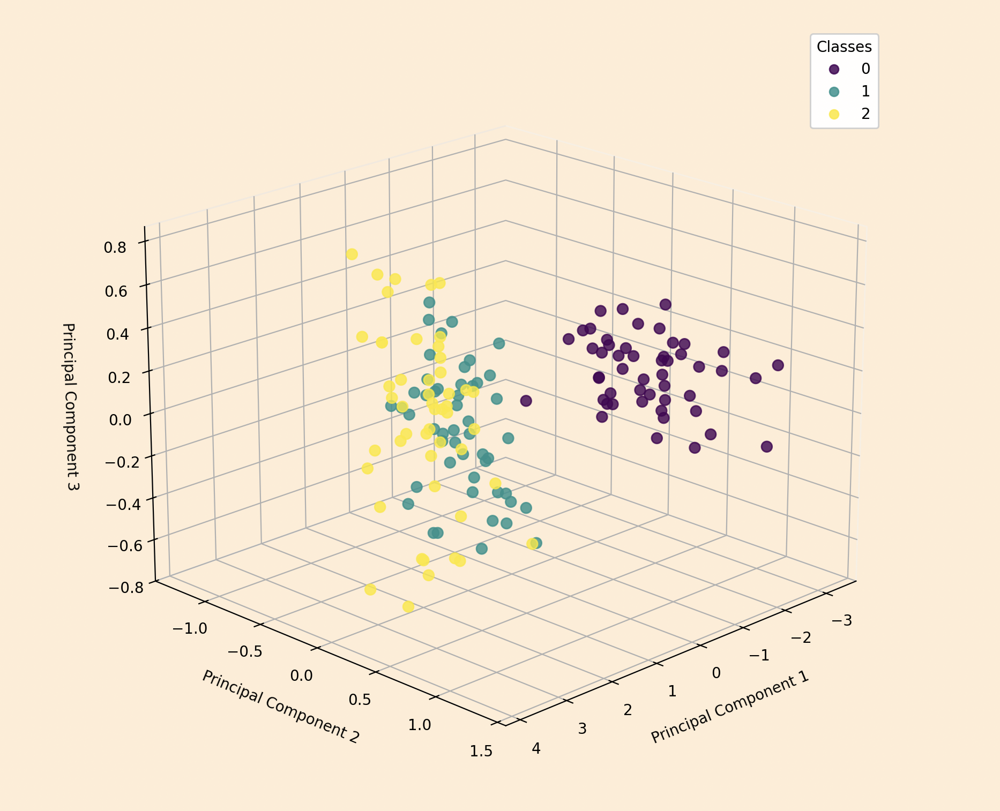
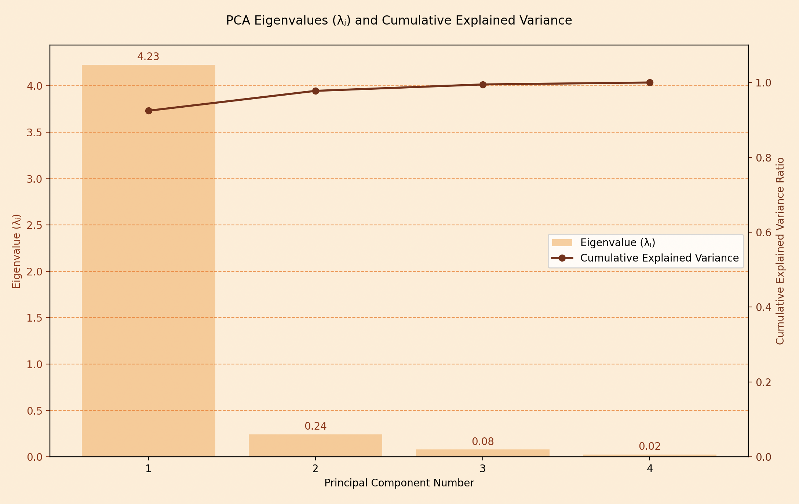
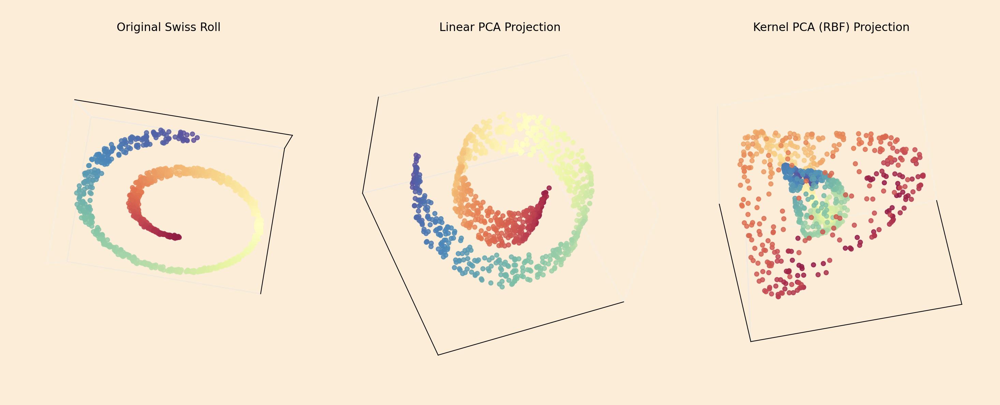
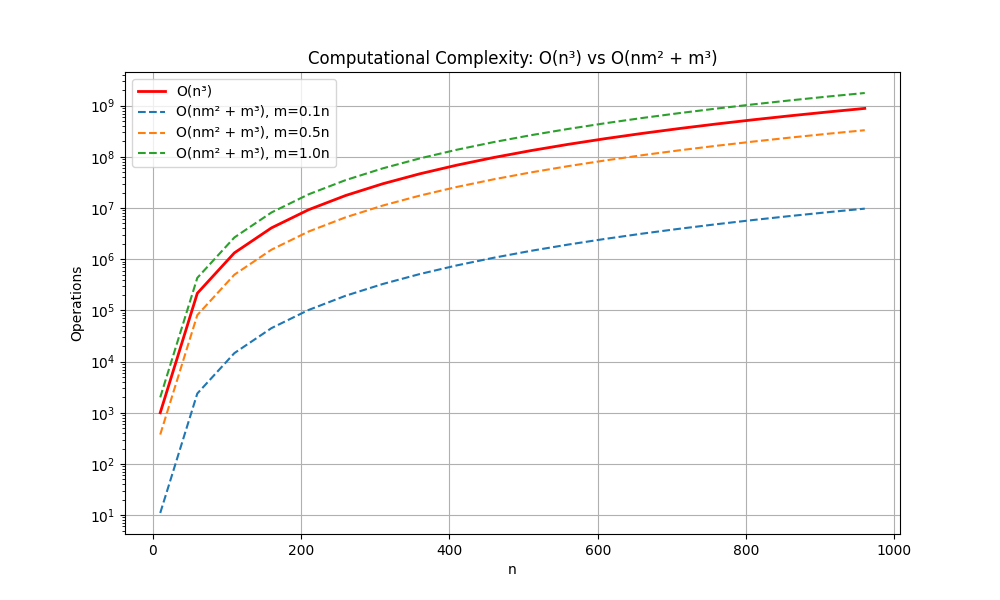
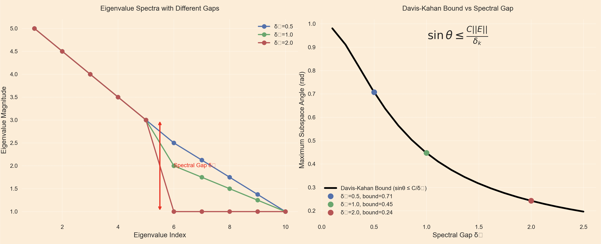
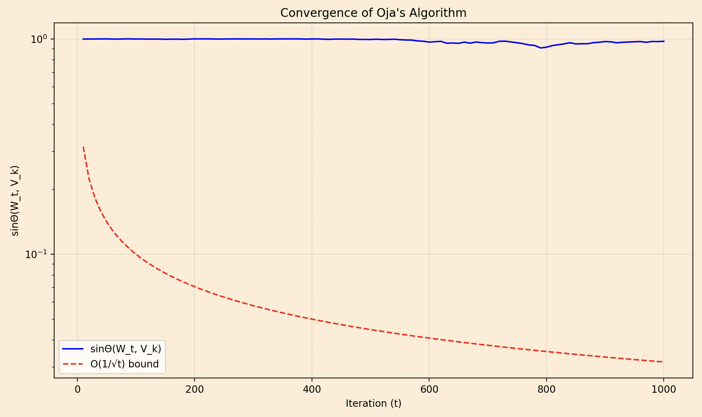

PCA simplifies our big datasets by reducing them to a smaller set of variables while keeping the most important patterns intact. It transforms our data into new coordinates that highlight the key trends, making it easier to analyze and visualize.
Lets say you have, thousands of samples, each described by hundreds of features. This could be images, genetic data, or customer profiles, represented as a matrix \( X \in \mathbb{R}^{n \times d} \), where each row \( x_i \in \mathbb{R}^d \) is a sample. The problem? It’s overwhelming to analyze or visualize directly. Enter Principal Component Analysis (PCA), a technique that compresses this data into a smaller matrix \( Z \in \mathbb{R}^{n \times k} \), where \( k \ll d \), while keeping as much information as possible. Mathematically, PCA finds a low-dimensional representation by minimizing the squared reconstruction error: \[ L(W, Z) = | X - ZW^\top |_F^2, \] where \( W \in \mathbb{R}^{d \times k} \) has orthonormal columns (i.e., \( W^\top W = I_k \)). Solving this optimization problem leads to the eigen-problem: \[ \frac{1}{n} X^\top X w_j = \lambda_j w_j, \quad j = 1, \dots, k, \] where the eigenvectors \( w_j \) form the columns of \( W \), and the best rank-\( k \) approximation of \( X \) is: \[ X_k = \sum_{j=1}^k \sqrt{\lambda_j} u_j v_j^\top, \] with \( u_j \) and \( v_j \) as the left and right singular vectors of \( X \). For beginners, this means PCA picks the "best" directions in your data that capture the most spread. But why do these eigenvectors give us the optimal subspace?
PCA's ability is to maximize the variance of the projected data. When we project \( X \) onto a subspace defined by \( W \), where \( W^\top W = I_k \), the leading eigenvectors don't just minimize reconstruction error, they maximize the variance captured by any k-dimensional subspace. the variance captured is: \[ \text{Tr}(W^\top \Sigma W), \quad \Sigma = \frac{1}{n} X^\top X. \] The Courant–Fischer theorem tells us that the maximum of this trace, over all orthonormal \( W \), is: \[ \max_{W^\top W = I_k} \text{Tr}(W^\top \Sigma W) = \sum_{j=1}^k \lambda_j, \] achieved when \( W \)’s columns are the top \( k \) eigenvectors of \( \Sigma \). This means PCA finds the directions where your data varies the most like finding the main axes of a cloud of points. To measure how much variance we’ve captured, we use the explained-variance ratio: \[ R(k) = \frac{\sum_{j=1}^k \lambda_j}{\sum_{j=1}^d \lambda_j}. \] For example, if \( R(2) = 0.95 \), two components capture 95% of the data’s variability.
What if our data doesn't live on a linear subspace but on a curved, nonlinear manifold? Does PCA still make sense, or do we need a more sophisticated approach?
When data lives on a nonlinear manifold like points on a spiral or a sphere linear PCA struggles because it assumes straight line relationships. The solution? Kernel PCA. We map the data to a high-dimensional feature space \( \mathcal{H} \) via a nonlinear function \( \phi: \mathbb{R}^d \to \mathcal{H} \). So instead of computing \( \phi(x_i) \) we use a kernel function \( k(x_i, x_j) = \langle \phi(x_i), \phi(x_j) \rangle_{\mathcal{H}} \), forming the kernel matrix \( K_{ij} = k(x_i, x_j) \). To center the data in this space, we adjust: \[ \tilde{K} = \left( I - \frac{1}{n} \mathbf{1}\mathbf{1}^\top \right) K \left( I - \frac{1}{n} \mathbf{1}\mathbf{1}^\top \right). \]
We then solve the eigenvalue problem \( \tilde{K} \alpha_j = \lambda_j \alpha_j \), where \( \alpha_j \) are normalized eigenvectors. For a new point \( x_* \), its projection is: \[ z_j = \sum_{i=1}^n \alpha_{ji} k(x_i, x_*). \]
Here's a representation a Swiss roll dataset showing how linear PCA fails (flat projection) vs how kernel PCA succeeds (preserving local structure). Original Swiss roll (left) its color gradient represents the underlying parameterization, Linear PCA (middle) fails to preserve local neighborhood relationships and colors become mixed because the manifold is projected incorrectly, Kernel PCA (right) RBF kernel successfully "unrolls" the manifold and preserves the local structure and color gradient.
Popular kernels include the Gaussian RBF \( k(x, x') = \exp(-\gamma |x - x'|^2) \) or polynomial \( k(x, x') = (x^\top x' + c)^p \). This lets PCA capture nonlinear patterns, but computing \( K \) and its eigendecomposition costs \( O(n^3) \). How can we scale this to massive datasets?
For large \( n \), forming and decomposing the kernel matrix is computationally brutal. Enter approximations like Random Fourier Features (RFF) and the Nyström method. RFF, based on Bochner’s theorem, approximates shift-invariant kernels (e.g., Gaussian) by sampling \( m \ll n \) frequencies \( \omega_1, \dots, \omega_m \sim p(\omega) \). We compute feature vectors: \[ z(x) = \sqrt{\frac{2}{m}} [\cos(\omega_1^\top x + b_1), \dots, \cos(\omega_m^\top x + b_m)]^\top, \] so that \( ZZ^\top \approx K \), reducing complexity to \( O(nm^2) \). Alternatively, the Nyström method selects \( m \) landmark points \( {\tilde{x}_i} \) and approximates: \[ K \approx C W^{-1} C^\top, \quad C_{ij} = k(x_i, \tilde{x}j), \quad W{ij} = k(\tilde{x}_i, \tilde{x}_j). \]
This cuts costs to roughly \( O(nm^2 + m^3) \). Both methods make kernel PCA feasible for big data, but since they’re approximations, how do we know how accurate they are?
To quantify approximation errors, we turn to the Davis-Kahan sinΘ theorem. If \( \hat{\Sigma} = \Sigma + E \) is a perturbed covariance matrix, and \( V_k \), \( \hat{V}_k \) are the top-\( k \) eigenvectors of \( \Sigma \) and \( \hat{\Sigma} \), the angle between subspaces is bounded, The Davis-Kahan theorem states: \[ | \sin \Theta(V_k, \hat{V}_k) |_2 \leq \frac{|E|_2}{\delta_k}, \] where \( \delta_k = \lambda_k - \lambda_{k+1} \) is the spectral gap. For PCA, if the empirical covariance \( \hat{\Sigma} \) deviates from the true \( \Sigma \) by \( \epsilon \), the subspace error is \( \sin \Theta \leq \epsilon / \delta_k \). Concentration bounds, like Vershynin’s, ensure: \[ \text{Pr}[| \hat{\Sigma} - \Sigma |_2 \leq C \sqrt{d/n}] \geq 1 - e^{-t}, \] meaning \( n \gtrsim d/\delta_k^2 \) samples suffice for reliable PCA.
The left plot shows eigenvalue spectra with different spectral gaps (δₖ), where larger gaps create clearer separation between eigenvalue clusters. The right plot demonstrates the Davis-Kahan bound, illustrating how larger δₖ values tighten the bound (sinθ ≤ C/δₖ), making eigenvector estimation more stable to perturbations. Together, they visualize why PCA performs better with distinct eigenvalue gaps, as perturbations affect subspaces less when δₖ is large.
But what if our data arrives in a stream, and we can’t store all \( n \) samples at once?
For streaming data, Oja’s algorithm offers a solution. It updates the principal direction online via stochastic gradient ascent on the Rayleigh quotient. For the leading eigenvector, Oja's rule is:\[ w_{t+1} = w_t + \eta_t x_t x_t^\top w_t, \quad w_{t+1} \leftarrow w_{t+1} / |w_{t+1}|, \] with a diminishing step size \( \eta_t = c/t \). This converges almost surely to the top eigenvector. For the top-\( k \) subspace, the mini-batch version is: \[ W_{t+1} = W_t + \eta_t X_t^\top X_t W_t, \quad W_{t+1} \leftarrow \text{QR}(W_{t+1}). \] The expected error shrinks as \( \mathbb{E}[\sin \Theta(W_t, V_k)] \leq C/\sqrt{t} \), using only \( O(kd) \) memory.
The plot shows how the subspace error sinΘ(Wₜ, Vₖ) decreases over iterations in Oja's algorithm (blue line), tracking the theoretical O(1/√t) convergence rate (red dashed line). The logarithmic y-axis reveals the characteristic inverse-square-root decay pattern. Shows Oja's algorithm's stochastic approximation of principal components, with the gap between curves reflecting constant factors in the convergence bound.
Can we accelerate these updates while maintaining low memory requirements?
To accelerate Oja’s algorithm, we add Polyak’s momentum: \[ w_{t+1} = w_t + \beta (w_t - w_{t-1}) + \eta x_t x_t^\top w_t. \] This boosts convergence from \( O(1/t) ) to ( O(1/t^2) \) when the spectral gap is favorable. Alternatively, view the update as a randomized Kaczmarz iteration on \( Aw = \lambda w \), where \( A = \mathbb{E}[xx^\top] \): \[ w_{t+1} = w_t + \beta (w_t - w_{t-1}) + \eta (x_t^\top w_t) x_t - \eta \lambda w_t. \] This simple modification provides a provable speed-up from O(1/t) to O(1/t²) under certain spectral gap conditions
The plot compares the convergence rates of three different algorithms for principal component analysis: standard Oja's algorithm, momentum-accelerated Oja's method, and the Lanczos method. On the logarithmic y-axis, we see the subspace error (sinΘ) decreasing over iterations (x-axis), where steeper slopes indicate faster convergence. The standard Oja's method (solid red line) shows the characteristic 1/t rate of basic stochastic gradient descent, while the momentum-accelerated version (dashed blue line) demonstrates the improved 1/t² convergence. Most strikingly, the Lanczos method (dotted green line) exhibits exponential convergence, rapidly outperforming both Oja variants.
Tuning \( \beta \) near \( \beta^* = \left( \sqrt{\kappa} + 1 \right)^2 / \left( \sqrt{\kappa} - 1 \right)^2 \), where \( \kappa = \lambda_1 / \lambda_2 \), mimics the Lanczos method’s speed without storing a Krylov basis
This is all from myside on Principal Component Analysis. Hope I was able to add few value to your today's learning :)